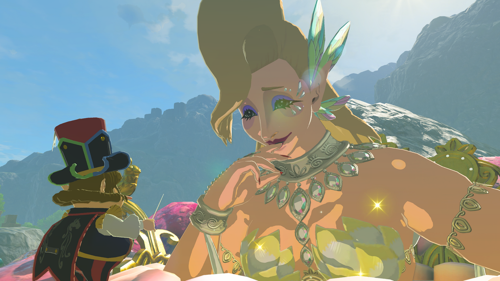

图：大桥断了，乐团要渡河去对岸，得先拼一艘木筏。
📑 本篇目录
先说结论：渡河去对岸，鼓声唤醒可秋拉
可秋拉把自己关在双子驿站对岸河边的花蕾里，只听得进毕兹的鼓声。先完成献给大妖精的小夜曲和传递甜蜜节奏，让鼓手毕兹回到乐团，再去双子驿站找团长米洛央：通往对岸的大桥断了，得用究极手拼一艘木筏，把马车运过河。乐团一演奏，可秋拉就醒了——100 卢比到手，之后可以找她强化防具。
| 阶段 | 要做的事 |
| 前置 | 先完成献给大妖精的小夜曲（解锁蒂拉）和传递甜蜜节奏（毕兹归队） |
| 接任务 | 双子驿站找乐团团长米洛央 |
| 拼筏 | 两块大木板拼成宽平台，装两个风扇和一个操纵杆 |
| 装车 | 把木筏放进水里，再把乐团的马车固定到木筏上 |
| 渡河 | 开木筏顺河去对岸，保持平稳，别让马车沉水 |
| 收尾 | 乐团演奏，唤醒可秋拉 |
接取与奖励
| 项目 | 内容 |
| 接取 | 先完成献给大妖精的小夜曲和传递甜蜜节奏（毕兹归队），再到双子驿站找乐团团长米洛央 |
| 奖励 | 100 卢比（银卢比）；之后可以找可秋拉强化防具 |
第一步：先让毕兹归队
乐团的鼓手毕兹还没回来，可秋拉听不到鼓声是不会出来的。先去卡卡利科村东南边的山路附近找毕兹：给他 3 份精力蜂的蜂蜜，他做一份蜂蜜可丽饼送给团长，毕兹就会回到乐团。详细流程见传递甜蜜节奏。

图：给毕兹 3 份精力蜂的蜂蜜，让他做可丽饼，他才会回乐团打鼓。
第二步：到双子驿站找米洛央
毕兹归队后，到西哈特尔地区的双子驿站，乐团就在驿站旁。和团长米洛央对话，他会说可秋拉喜欢毕兹的鼓声，但通往对岸的大桥断了，过不了河。
第三步：拼一�艘木筏
到河边，用究极手把两块大木板拼成一块又宽又平的木筏，再装两个风扇和一个操纵杆：风扇装在木筏后方，操纵杆装在前方。河边就有现成的木板、风扇和操纵杆，拿起来直接拼就行。
第四步：马车上筏，乐团上船
把木筏放进水里，再用究极手把乐团的马车放到木筏上固定好。和米洛央对话，让乐团成员坐上马车。
第五步：顺河开到对岸
启动操纵杆，驾驶木筏顺着河流前往对岸的花蕾。保持木筏平稳，别让马车完全沉进水里；水流急，速度稳一点，别横着冲。
第六步：演奏唤醒可秋拉
到了对岸，乐团开始演奏小夜曲，大妖精可秋拉从花蕾里出来了。和米洛央对话，领 100 卢比。之后就可以找可秋拉强化防具了。

图：四位大妖精全部唤醒后，防具最高可以强化到四星。
关键信息表
| 项目 | 内容 |
| 接取地点 | 双子驿站（西哈特尔地区），找乐团团长米洛央 |
| 前置 | 先完成献给大妖精的小夜曲和传递甜蜜节奏（毕兹归队） |
| 拼筏 | 两块大木板拼成宽平台，装两个风扇和一个操纵杆 |
| 渡河 | 木筏放进水里再让乐团上船，顺河开到对岸 |
| 奖励 | 100 卢比（银卢比）；之后可以找可秋拉强化防具 |
容易翻车的地方
- 没让毕兹归队就跑来——先完成传递甜蜜节奏。
- 木筏太小——两块大木板拼成一块又宽又平的平台再放马车。
- 马车沉水里——保持木筏平稳，别让马车完全沉进水里。
- 风扇没电——带个电池或备用左纳乌能量，木筏重、耗电快。
- 没上船就开走——先把马车固定好、乐团坐上船再启动操纵杆。
- 接了这篇先做完——做完之前接不了其他小夜曲任务。
一句话总结
先让毕兹归队，再去双子驿站拼木筏渡河，送乐团去对岸演奏唤醒可秋拉，100 卢比到手。